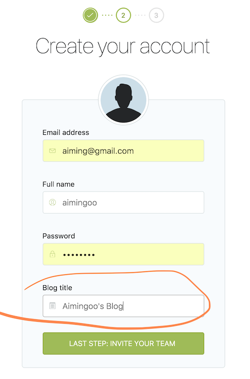
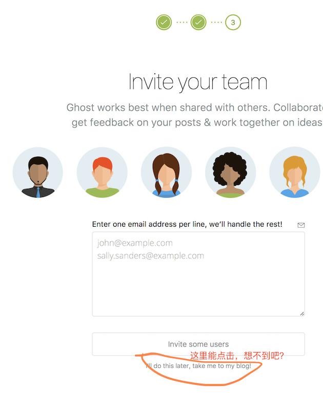

博客迁移手记（一）
在这一系列的博客中，我将仔细地记录我搭建这个博客的全部过程、工具，以及诸多技巧。
1. 如何迁移你的博客 - 推荐BlogToWordpress
确实有很多工具来帮助你将历史、陈旧的博客迁到某个地方，而相对来说比较新的做法，就是将博客全文导出，然后按某种格式生成成静态的页面——于是你就有了新的博客站点。
然而事实上并不那么容易——这些工具分种种流派以及不同的实现语言。有幸的是，综合这些尝试，我们可以找到一个较简单而又完整的工具链条：从旧博客转到markdown文件，然后再将markdown导入到新博客中去。
在从旧博客到markdown的转换过程中，还存在一种中间格式，就是标准的Wordpress导出文件格式，这是一种.xml文件。Wordpress是一种在国内受到广泛支持的博客系统，因此相关的工具集非常丰富。通过相当长时间的搜索、分析与比较，我得到了一个最终可用的工具集。如下：
- 通过BlogToWordpress来将旧博客转到Wordpress导出文件
- 它支持sina、sohu、csdn、163、baidu、天涯博客等等很多种国内的博客。
- 它会抓取图片等文件作为附件保存到指定目录。
- cnblogs或其它博客可以考虑先用工具转成markdown文件的方法，例如使用cnblog2jekyll中的generatemarkdownall。
- 通过wp2md来将Wordpress导出的.xml转换到Markdown格式.md
- 我最终使用的是Ghost博客系统，所以我使用wp2ghost来直接转换成了Ghost支持的导入格式.json
- Ghost也支持单篇或多篇.md格式文章的导入，后面会讲到使用.md的方法
- 你不必非得使用Ghost博客系统，多数新的博客系统都支持Wordpress的.xml导出文件或者独立的.md文件。
BlogToWordpress的支持站点在这里：Crifan的BlogsToWordPress ，但是下载是放在SourceForge上的：https://sourceforge.net/projects/blogstowordpress。
BlogToWordpress需要Python 2.7.2或2.x，并且需要以下依赖包/库：
- Python Imaging Library (PIL)
- crifanLib
- chardet，推荐chardet 1.0.1
- BeautifulSoup，推荐BeautifulSoup-3.0.6.
除了PIL之外其它三个包/库已经包含在BlogsToWordpress的发布包(v18.3)里了，而PIL是可选安装的（只是在极少数情况下才会用到）。所以，总的来说BlogsToWordpress也是即解压即用的。
我在mac上使用的命令如下（SourceForge上也有windows .exe版本，可以尝试）：
# 1. 下载BlogsToWordPress
> curl -L 'https://sourceforge.net/projects/blogstowordpress/files/v18.3/BlogsToWordpress_v18.3_2014-05-23.7z/download' -o BlogsToWordpress_v18.3_2014-05-23.7z
> 7z x BlogsToWordpress_v18.3_2014-05-23.7z
# 2. 生成调用Stub shell script
> echo 'python BlogsToWordpress.py --maxXmlSize 0 --googleTrans no --wpPicPath "/bkImages" -s "$1"' > runner.sh
# 3. 运行脚本
> bash runner.sh "http://blog.sina.com.cn/aimingoo" | tee BlogsToWordpress.log
# 4. 归并文件到目录中
# - BlogsToWordPress根据url中的UserName部分来生成下载文件的目录，本例中是aimingoo
# - 脚本中指定的wpPicPath参数会使.xml中的图片url修正，但下载文件仍然是在aimingoo/pic目录中，所以需要更名
> mv WXR_*.xml aimingoo/
> mv BlogsToWordpress.log aimingoo/
> mv aimingoo/pic aimingoo/bkImages
> mv aimingoo blog.sina.com.cn-aimingoo
如果你需要处理更多的博客网站，那么只需要重复第3~4步即可。
2. 用本地博客导入 - 例如Ghost
如果你得到的是一批Markdown格式（.markdown或.md）的文件，以及用相对目录来保存的图片等附件——注意Ghost使用导入时也支持绝对路径，那么你可以直接将它们导入到支持该格式的本地博客中，例如Ghost。
2.1 搭建本地博客
所谓本地博客，就是一个你在的电脑上运行的，在浏览器中可以使用
来浏览的博客系统。我们下面就用Ghost来搭一个。
我在mac上使用的命令如下（应该可以在Windows上安装nodejs并搭建Ghost，但我没有试过）：
# 获取和解压Ghost
> curl -L https://ghost.org/zip/ghost-latest.zip -o ghost.zip
> unzip -uo ghost.zip -d ghost
> cd ghost
# 使用npm来安装Ghost
# - 如果你没有安装brew，那么参考下面的地址安装一份先
# - https://brew.sh/index_zh-cn.html
> brew install node
> npm install --production
# 将Ghost运行在开发者模式上
> npm start
Ghost is running in development...
Listening on 127.0.0.1:2368
Url configured as: http://aimingoo.github.io
Ctrl+C to shut down
2.2 准备导入文件
我们之前已经得到了从旧博客网站中导出的两类文件：
- Wordpress导出格式的*.xml，以及（有可能的）bkImages目录；或
- 一批Markdown格式的文件
如果你直接使用Markdown文件，那么将它们打包在一个.zip文件中即可。如果你使用.xml，那么需要先用wp2ghost来做一下转换（你也可以考虑通过其它工具直接转换成.md）。
使用wp2ghost的好处是它生成的是.json文件，方便我们用其它工具或简单脚本来做进一步的检测、优化或其它处理。例如我写了一个脚本来做下面这些事：
- 将url-encode的文本解码成可读格式：有些文章的标题或tags都使用了编码，直接导入Ghost是没法看的
- 移除多余的tags：有些博客的tags是parse文章得到的，茫茫多
- 修正author id：博客中的作者与Ghost中作者是没有对应关系的，需要修正
- ……
等等。
下面的示例说明对.xml文件的处理：
# 1. 安装wp2ghost
# - 也可以直接使用git clone ...
> svn export https://github.com/jonhoo/wp2ghost/trunk wp2ghost
> cd wp2ghost
> npm install
# 2. 从Wordpress转换到json文件
# - 设文件位于~/blog.sina.com.cn-aimingoo中
# - 注意wp2ghost.js一次只能转换一个文件，下面用*.xml是省掉写文件名
> node bin/wp2ghost.js ~/blog.sina.com.cn-aimingoo/*.xml > ghost-tmp.json
# 3. 切换工作目录
> mv ghost-tmp.json ~/blog.sina.com.cn-aimingoo/
> cd ~/blog.sina.com.cn-aimingoo/
# 4. 获取putrefy.js脚本
# - 请直接修改putrefy.js源代码，注意它并不是通过命令行参数来配置的
> curl -L https://github.com/aimingoo/ghost-utils/raw/master/putrefy.js -o putrefy.js
> node putrefy.js ghost-tmp.json > ghost.json
> zip -r ghost_archive.zip ghost.json bkImages
建议你根据你的博客的需求来修改putrefy.js中的参数配置，某些情况下（例如你要合并多个博客），那么在转换中所需要的putrefy.js脚本会各个不同，因此需要为它们配置各自适用的putrefy.js脚本。
现在你所得到的ghost_archive.zip就是Ghost可用的导入文件了。
2.3 导入到本地博客
我们刚刚启动了本地Ghost博客：
# 在你的Ghost安装目录中（例如~/ghost）执行如下命令
> npm start
缺省情况下，在你用http://aimingoo.github.io/访问它时会看到了一个初始状态的博客。你需要为自己建立一个博客账号，登录并管理它。这时，你应该访问http://aimingoo.github.io/ghost/。
建立博客账号的过程中，在第二步（输入你的名字、邮箱和初始密码）时会要求你设置博客的标题，忘掉了也没关系，你可以随时在管理界面的Settings -> General中去修改它。

另外，在第三步时会提示你邀请你的博客团队成员（Ghost是一个多人博客平台），请直接跳过忽略。有关这个功能我们将来再讨论——你随时可以在管理界面的Team功能中发起邀请。

初始化错了也没关系，来到你的Ghost安装目录，删除数据库文件，然后重启Ghost就可以了。
# 你可能需要先用Ctrl + C键退出正在运行的Ghost
# - 以开发版本模式运行的Ghost是没有驻留在后台的
> rm content/data/ghost-dev.db
> npm start
然后我们来到Settings -> Labs中，使用import将我们此前准备好的.zip文件导入即可。如果一切顺利，你会在左下角看到导入成功的提示；如果失败，红色提示会出现在当前页面的顶端。
最后，建议你开启Labs -> Enable Beta Features中的Public API选项，有许多第三方主题需要使用到这些博客功能。
3. 迁移与Ghost使用小结
其它的一些注意事项包括：
你创建的第一个博客账号（也就是作为管理员的这个）是不需要验证mail地址的，但使用邀请功能加入的其它账号就需要验证。
导入博客的过程中确实会出现一些意外，这是我写上面提到的
putrefy.js工具的原因。如果你在导入过程中遇到问题，建议你尝试改写这份代码，或者将出问题的导入文件发给我——我尽量替你的博客内容保密，尽管它作为博客原本是公开的。呵呵确实有非常多的途径来完成本文中描述的过程，但坦率地说，我尝试过很多了，目前这种算是最……可行的。
一旦你将.zip导入到Ghost，你就可以在Ghost管理和更新它们，发布或静态化等等。因此我在后续文章中提到的过程再与传统博客（例如下载、转换的那些文件）就没什么关系了。
如果你备份content整个目录（例如Ghost导入的图片位于
./content/images目录中），那么你可以随时重装Ghost，或者更新至新的版本而不会丢失数据。Ghost导入的博客文章是可能存在格式问题的，也可能导致你正在使用的Ghost博客主题（缺省是Casper主题，在
Settings -> General中设置）格式混乱或无法使用，请自行编辑它们。我事实上将所有历年文章逐一更新过，并尽量使用了markdown格式——这样以后管理起来就方便了。Ghost的数据库在
./content/data目录中，对应于开发版的是content/data/ghost-dev.db文件。如果你安装过sqlite，那么可以直接用命令行来操作它——或者e用你喜欢的GUI工具也行。例如：```bash
sqlite3 -header -column ghost-dev.db 'select id, name, email from users' id name email
1 aimingoo aiming@gmail.com ```
记住这个id = 1，它是你的管理帐户id。在导入用的ghost.json文件中，它也被称为author_id，在将来做多账户操作时你可能需要了解它。
对于程序员来说这绝对是个好消息，毕竟我们可以直接用SQL来操作所有的博客文章了。例如以前托管的下载地址更新了，但是在哪些文章中用到它们了呢？不错，用like操作去查找一下posts表中的markdown或html字段就可以了。例如：
```bash
sqlite3 ghost-dev.db 'select id, title from posts where markdown like "%skydrive%"' 1519|《大道至简》的幕后故事：终结篇、勘误和PDF下载 1595|近期的公开资源汇总(已完整)~ ... ```
如果你得到上述的
id值，那么可以直接在Ghost的管理界面中去编辑它——Ghost管理界面没有搜索功能。例如直接在浏览器上使用如下地址：